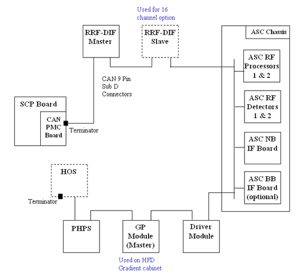
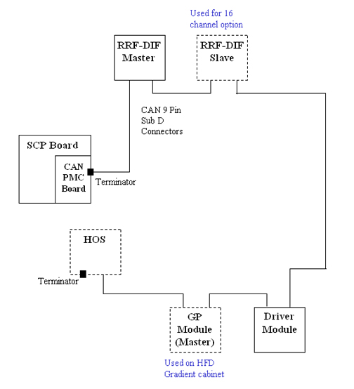

Operating Documentation
Direction 5440001-3, Rev# 6
Signa HDxt Service Methods
Module Version 1.0, Version Date 4/26/07
Operating Documentation |
| NOTE: | Nodes shown in solid boxes are required for Upgraded Excite III system configurations. Nodes in dashed boxes are optional and depend on the particular system configuration. The Terminator shown on the HOS node in this diagram must be installed on the last node in the CAN chain. |
Illustration 1: CAN Link Forward Production

| NOTE: | Nodes shown in solid boxes are required for Upgraded Excite III system configurations. Nodes in dashed boxes are optional and depend on the particular system configuration. The Terminator shown on the HOS node in this diagram must be installed on the last node in the CAN chain. |
Illustration 2: CAN Link Upgraded System
